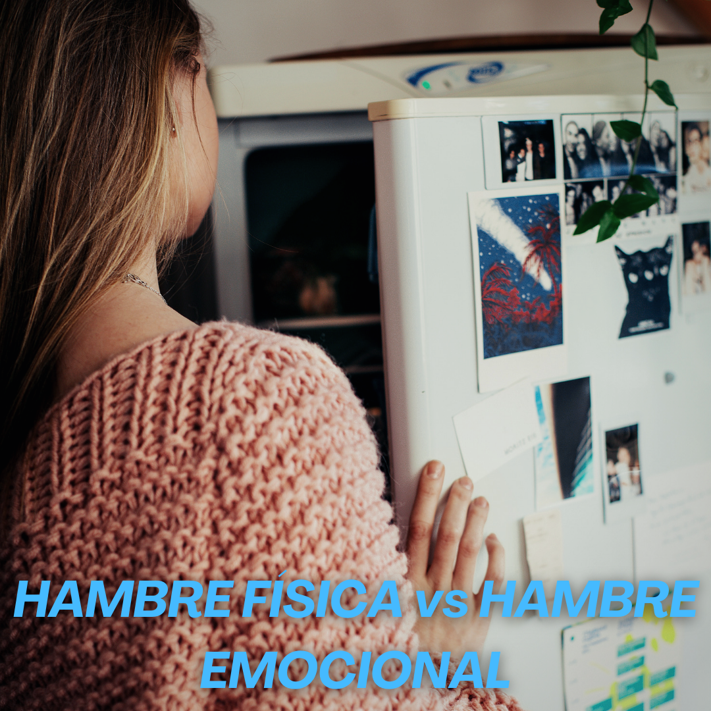

HAMBRE FÍSICA vs HAMBRE EMOCIONAL
En algunas personas comer emocionalmente puede ser un problema real, al provocar aumento severo de peso o ciclos de atracones.
El problema de comer emocionalmente es que, en cuanto acaba el placer de comer, las emociones que lo desencadenan permanecen. Y a menudo te sientes peor por haberte comido la cantidad o el tipo de alimento que has ingerido. Esa sensación de culpa es muy fea , y lo peor es que no registras nada durante el acto , casi que tampoco lo disfrutas. Y es un vacío que no tiene límite.. va si, el límite es hasta que se termine todo lo que está frente a mis ojos!
-Por eso ayuda tanto conocer las diferencias entre el hambre física y el hambre puramente emocional.
-Hambre física:
* aparece gradualmente y se puede “postergar” si escuchaste bien se pude postergar!
* se puede satisfacer con cualquier comida.
* puedes dejar de comer cuando te sientes satisfecho. Por más que tú plato sea muy grande.
* El punto más importante no causa sentimientos de culpa, ni reflexión !
-Hambre emocional:
* sientes una necesidad urgente de comer.
* causa un deseo de comer algo en especial (por ejemplo, pizza o helado)
* comes más de lo normal.
* causa un sentimiento de culpa al terminar de comer.
-Controlar la conducta de comer para manejar tus emociones implica encontrar otras formas de afrontar las situaciones y emociones que hacen que una persona se refugie en los alimentos.
Por ejemplo, ¿eres de los que llegan a casa por las tardes y automáticamente se dirigen a la cocina? Detenete y pregúntate: "¿tengo realmente hambre?" ¿Notas los típicos ruiditos del hambre en el estómago? ¿Te cuesta concentrarte o estás irritable? Si estos signos apuntan al hambre, elige algo ligero y saludable para matar esa ansiedad hasta la hora de cenar.
Revisar las cosas que te han ocurrido ese día es un gran punto de partida! Admite cómo te han hecho sentir: ¿contento?, ¿agradecido?, ¿entusiasmado?, ¿enfadado?, ¿preocupado?, ¿celoso?, ¿excluido?.
.png)